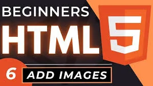

Vodič za učenje web developmenta
Važnost učenja na ispravan način
Davnih dana kada sam počinjao moju IT karijeru(pravilnije rečeno učenje) na zalost nisam imao nikoga ko bi me uputio kuda da idem i prvenstveno odakle da pocnem da učim.
To mi na prvu nije izgledalo tako problematično ali vremenom sam shvatao da se stalno vraćam za nesto sto sam ispustio,imao sam osećaj kao da se vrtim u začaranom krugu.
Ideja ovog sajta kao i mog kanala na youtube-u koji ću ovde često pominjati je da vam dam jasne direkcije odakle da počnete i kako da učite ako ste početnik a obuhvatićemo i neke naprednije tehnologije.
Prva i jako bitna stvar koju trebate zapitati sebe pre nego uopšte i počnete sa učenjem je da li ste stvarno osoba za delatnost programiranja,u kom smislu?
U poslednje vreme razgovaram sa puno ljudi i pitaju me dosta u vezi programiranja kako i šta da rade,neki od njih očekuju od sebe previše,imaju stalni posao i porodične obaveze a žele da nauče programiranje u onih maksimalno 2 sata slobodnih koje imaju dnevno.
Ja im otvoreno kažem uvek da ako žele da se bave ovom temom moraju da se posvete web developmentu minimalno 50 sati nedeljno da bi u nedeljama i mesecima koji dolaze videli neki progres u svome učenju.
No,dosta što se uvoda tiče,da predjemo na temu,na tri kamena temeljca web programiranja a to su HTML5,CSS3 i JavaScript.
Ova tri kamena temeljca su deo ama bas svakog web sajta na internetu pa ako planirate postati web developer morate im posvetiti veliku pažnju.
Kriva učenja za ova 3 stuba web programiranja e sledeća,prvo se uči HTML5,zatim se uključuje CSS3 pa nakon toga u priču uključujemo JavaScript.
Ono što je bitno reći je da je JavaScript danas postao ozbiljan programski jezik koji se piše i na klijentskoj i na serverskoj strani.
Ako ste novi verovatno ne razumete sta je klijentska a sta serverska strana pa ću vam to za sad ukratko pojasniti kroz ovu rečenicu,klijentska strana je sve ono sto vidimo na webu a serverska strana su logike koje rade u pozadini na serveru i njih ne vidimo golim okom.
HTML5 - hiper tekst markup jezik
Prvi nazovimo ga jezik s kojim se susrećemo ako učimo programiranje od početka je HTML5 tako nazvan po novoj specifikaciji a po staroj znan samo kao HTML.
Na ovoj stranici govoriću samo osnovne stvari,a mnogo više na stranici u HTML 5 delu menija.
Dakle HTML 5 je "Hyper text markup language" koji služi za obeležavanje delova naše web stranice kroz takozvane tagove.
Stari HTML je imao samo neke osnovne tagove dok nam je HTML 5 doneo mnogo novih tagova i uveo semantiku u naše stranice.
Mogu sada ovde da vam pišem mnogo stranica ali dok ne vidite tagove u editoru po izboru nećete moći shvatiti sta su i sta rade tako da ćemo o svemu tome opširnije na HTML 5 stranici iz menija.
Deluje da je novi HTML 5 sa donošenjem semantike u naš markup jezik koji pravi skelet naše stranice napravio nekakvu vrstu iskoraka,mada ,iz iskustva u SEO optimizaciji vidim da guglovi crawleri ne smatraju semantiku bitnim faktorom za rankiranje sajtova u pretrazi.
Više o SEO optimizaciji govorićemo na SEO stranici iz menija pošto je sam seo nauka za sebe i takodje jedna od ećih galaksija u svetu zvanom web development.
CSS 3 - opisni jezik
Dakle sledeci po redu drugi stub od osnovna 3 koja sam pominjao iznad je CSS3 ili ti "Cascading tylesheet",da prevedemo na naš jezik uprosćeno govoreći to je opisni jezik.
Dakle kao opisni jezik CSS3 služi za stilizaciju naših HTML tagova,sada vam verovatno mnogo toga nije jasno ali biće kada dodje vreme za to.
Ono šta još ima smisla reći ovde u uvodu o CSS3 opisnom jeziku ili ti jeziku za dizajn naših stranica je da se sastoji od mnostva takozvanih CSS "propertija" kojima mi kao developeri dajemo neku vrednost da bi smo na HTML stranici dobili zadovoljavajući izgled stranica za nas ili našeg klijenta.
Mnogo više o CSS-u je na CSS 3 stranici iz menija,tu ćete detaljno moći da pročitate osnove o jeziku a ujedno ću vam dati najbolje mogučće reference za učenje CSS3 opisnog jezika.
Biće tu referenci prema youtube predavanjima a takodje u tim predavanjima imate dalje reference gde i šta čitati od najboljih svetskih autora jer kao što već napomenuh ovo je samo uvodni deo koji vam objašnjava sta sve možete pronaći na sajtu.
JavaScript programski jezik
Dakle šta je JavaScript?Javascript je programski jezik koji se moze odvijati na klijentskoj strani u browseru(pretraživaču) a od 2009-te pojavom platforme kao što je NodeJS može se pisati i na serverskoj strani.
Ubrzavanjem interneta doslo je do mogućnosti da se napravi platforma za pisanje javaskripta za serverske logike sto je omogućilo 2009-te godine Ryan Dahl-u da napravi Nodejs platformu u te svrhe.
Ovde je važno napomenuti da je javascript do 2009-te godine bio samo skriptni jezik koji se odvijao i radio u pretraživačima(Chrome,Firefox,Opera itd).
Kao što već pomenuh jačanjem interneta i zahvaljujući Rajanu Dalu javascript je izrastao u verovatno najpopularniji programski jezik današnjice.
Mnogo više o ovom jeziku i njegovim mogućnostima kao i o referencama za besplatno učenje govoriću na "JavaScript" stranici iz menija.
Tamo ćete u sitna crevca dobiti objašnjenja gde i kako ćete učiti ovaj popularni programski jezik besplatno i imaćete sve reference da bi ste znali putanju kojom da koračate da ne lutate kroz galaksiju programiranja.
Dakle,da zumiramo,pored osnovna 3 stuba web developmenta napomenutih u sekcijama iznad ovaj sajt se bavi i učenjem SEO optimizacije sajtova za pretraživačke mašine kao štp su Google,Bing,Yahoo,Duck Duck itd
Takodje sam obradio i osnove administracije web sajtova kroz cPanel i bezbednost sajtova na webu,bezbednost sajta na webu je jedna od najvažnijih stavki,svi mi mislimo neće hakovanje baš nama da se desi,ali verujte mi da se dešava,više od 30 hiljada sajtova na webu svakog dana postaju žrtva hakera.
Zato je extremno važno da naš sajt obezbedimo što je moguće bolje a da bi smo postigli visok stepen bezbednosti moramo pisati dobru validaciju i sanitizaciju podataka koje korisnici unose kada imaju interakciju sa našim sajtom i takodje su potrebni još neki koraci koji se rade u cPanelu našeg sajta ili sajta koji radite ili ćete raditi za vaše klijente.
Takodje ćemo obraditi u Nodejs delu sajta delimično i temu server side pisanja javascripta kroz Nodejs platformu i tamo imate odlične reference za učenje osnova Nodejs-a kroz primer web aplikacije koju sam napravio za potrebe vašeg učenja ali ćete učiti i kroz dokumentaciju kada pojačate znanje vašeg tehnickog engleskog jezika.
- 
Hvala na poseti i želim vam srećno učenje.